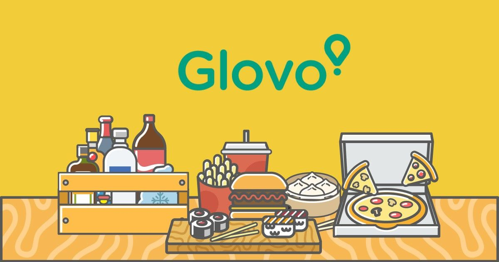

Проект за ADVB616 Стратегически бранд мениджмънт
Екип: Даниел Каменов, Дейвид Досев
Описание: Студентски проект, при който си избираме бранд и правим проучване – сторителинг, бранд адвокати, архитектура, матрица на БКГ, стойности, бранд идентичност, имидж, таргет групи и правим криейтив концепция.
Роля: Проучване за сторителинг, архитектура на бранда, матрица на БКГ, имидж, таргет групи. Съвместна работа по криейтив концепцията.
Архитектура: Glovo придобива марката “foodpanda” в Румъния и България, марката Donesi в Сърбия, Черна гора, Босна и Херцеговина и Pauza в Хърватия със сделки на обща стойност 170 милиона евро. В отделна сделка Glovo постига споразумение за придобиване на Ehrana, местна компания за доставка в Словения. Delivery Hero купуват Glovo в Латинска Америка за ~300млн долара.
Мисия: "Нашата мисия е да предоставим на всеки лесен достъп до всичко в техния град. Ние отиваме отвъд това да бъдем просто поредното приложение за доставка; искаме да станем приложението за всичко. Мисленето голямо включва мислене глобално."
Таргет: Всеки човек, който има достъп до телефон и интернет. Това разбира се включва не само клиентите на ресторантите, с които работи Glovo, но и самите ресторанти търсещи партньорство и възможност да увеличат печалбите на собствените си брандове.
Култура: Тя въпленява в себе си уникалното и разнообразното, ключови характеристики в културата на бранда са, че е приобщаваща, забързана и несравнима! Като компания обича да се движи бързо и да поема рискове.
Идея за TVC:
Криейтив 1
Жълти автомобили, колела и доставчици прелитат през екрана( *има звуци на коли и мотоциклети* ).
“И ти си ги виждал.”
“Чудиш се какво е?”
“Това е Glovo.”
*Поръчай всичко.*
Криейтив 2
GlovoPrime - България
Лансираща кампания за GlovoPrime в България
TVC - 15 сек. / YouTube add
Пътник има 3 часа до своят полет. Поглежда към храната в кафенето на летището.
Извърта глава. Изважда си телефонът и си поръчва нещо от Glovo.
Веднага след това идва куриерът като с него пристига охраната от летището.
Куриерът дава храната. Следващият кадър героят отхапва от бургер/пица и прави доволна физиономия.
“Order with priority anywhere, anytime”.